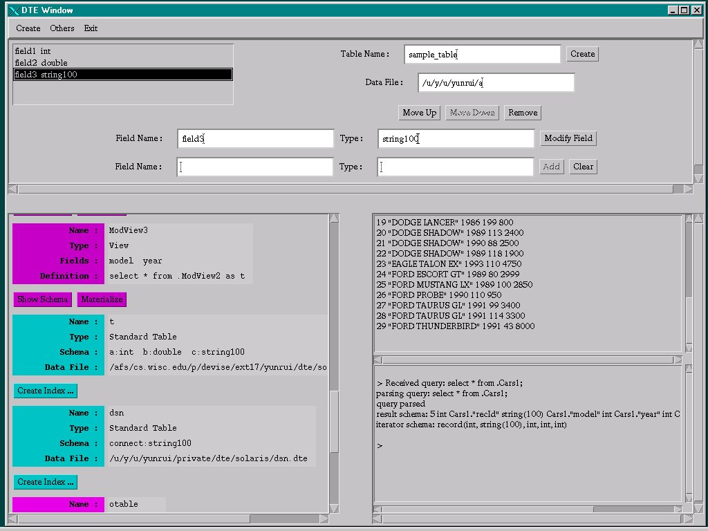

DTEW (DTE Window) provides a GUI interface for standalone DTE. DTEW is targeted for users who are not familiar with the language of SQL, although the user can still ask SQL queries directly through DTEW.
Below is the picture of the actual DTE Window. From the picture we can see that the whole window frame consists of 3 parts:
The Catalog Pane forms the bottom-left part of the whole window. It shows the contents of a catalog. By default, the contents of the "home catalog" of DTE is displayed in the Catalog Pane when DTEW is first brought up. More details of the Catalog Pane are describe here.
The Output Pane forms the bottom-right part of the whole window.
The Output Pane is divided into two parts. The upper part is used to
show query results. The lower part is used to show any error messages
or miscellaneous messages.
The Command Panes form the upper part of the whole window. There are
total of 9 Command Panes, each associated with a different menu
item. All these Command Panes share the same space (the upper part of
the whole window). The user can only see one of the Command Panes at
any time. More details of the Command Panes are described
here.

DTEW is written in Java. The main class is "DTEWindow". To run it, simply type
in your command line. However, before you run DTEW, you need to set up some environment variables correctly. Some of them are need by Devise/DTE and some are need by DTEW only. Here is the list of environment variables the user need to set:
In the Catalog Pane, the user can browse the contents of a catalog.
A catalog is a table(file) where the information of all the locally
accessible data sources (such as tables, views, remote DTE servers,
etc.) is stored. Each catalog entry (data source) has a name and a
type, and some other information (such as schema, data file, etc.)
specific to that type. A catalog entry is of one of the following
types:
Associated with each catalog entry there is zero or more "in-line"
buttons. They are:
The user can load any catalog into the Catalog Pane. This can be done
is one of the two ways:
Enter the name of the catalog in the text field on the very top of the
Catalog Pane, and press "Load Catalog" button. Here are some
example catalog names:
Enter the file name (or any environment variable name prefixed with
'$' that expands to a file name) of the catalog in the text field on
the very top of the Catalog pane, and press "Load File" button. Here
are some examples:
If the user loads a catalog in "Load by File" fashion,
there will be no "in-line" buttons. This is because DTE has no
knowledge of the name of the catalog being loaded.
There are 9 independent Command Panes in DTEW, each associated with
a different menu item. The user can only see one of the Command Panes
at any time. The user brings up a particular Command Pane by selecting
its corresponding menu item.
Functionality:
Functionality:
Functionality:
Functionality:
Functionality:
Functionality:
Functionality:
Catalog Pane
Command Panes
Create Table Pane
Create a local Standard Table.
Menu Item:
Create | Create Table
Usage:
Queries/Commands issued:
The create table operation is achieved by issusing command
"INSERT INTO . VALUES ('name StandardTable
schema data file');" to DTE.
Limits/Problems:
Create View Pane
Create a local View.
Menu Item:
Create | Create View
Usage:
Queries/Commands issued:
The create view operation is achieved by issusing command
"INSERT INTO . VALUES ('name SQLView
attribute names definition');" to DTE.
Limits/Problems:
Create Gestalt Pane
Create a local Gestalt.
Menu Item:
Create | Create Gestalt
Usage:
Queries/Commands issued:
Limits/Problems:
Create Index Pane
Create a R-Tree index on a Standard Table.
Menu Item:
Create | Create Index
Usage:
Queries/Commands issued:
DTEW sends command
"CREATE rtree INDEX name ON table
(key attributes) (non-key attributes);" to DTE.
Limits/Problems:
By the time this document is written (5/4/99), DTE only supports
R-Tree index and it does not work correctly.
Show Gestalt Pane
Show the list of members of a local Gestalt. Register new
members into a gestalt, unregister new members from a gestalt.
Menu Item:
Others | Show Gestalt
Usage:
Queries/Commands issued:
Limits/Problems:
ODBC Pane
Various commands related to ODBC, including
creating/displaying/deleting ODBC DSNs, creating/displaying/deleting
ODBC Tables.
Menu Item:
Others | ODBC Commands
Usage:
Queries/Commands issued:
Limits/Problems:
All the ODBC commands only work on Windows NT/95 platform, with
appropriate ODBC driver running. By the time this document is written
(5/4/99), DTE hardly compiles on Windows NT any more.
Execute SQL Pane
Any SQL commands accepted by DTE.
Menu Item:
Others | Execute SQL
Usage:
Queries/Commands issued:
Whatever SQL command the user enters.